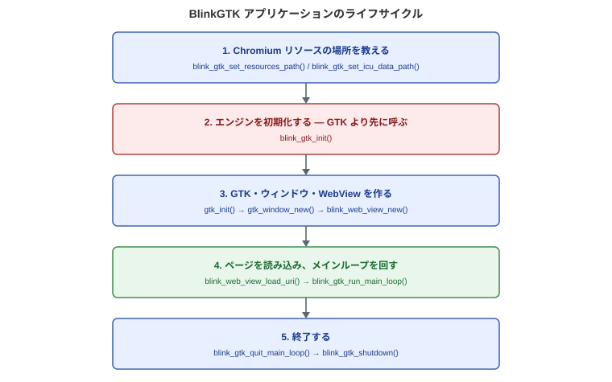

BlinkGTK を組み込んだアプリケーションをビルドするための最小限の手引きです。
BlinkGTK は Chromium を組み込んでいるため、本体のビルドには Chromium
の
ソースツリー (100 GB 超)
と数時間から十数時間のビルド時間を要します。
利用者は配布されているパッケージを使ってください。
本ページは
「配布パッケージを使ってアプリをビルドする」手順を説明します。
配布形態は 3 つに分かれています。
| パッケージ | 用途 |
|---|---|
| runtime | 共有ライブラリと Chromium ランタイム。実行に必要 |
| devel | ヘッダと .pc。ビルドに必要 |
| gir | GObject Introspection typelib。Python / GJS から使う場合に必要 |
# Fedora
sudo dnf install ./blinkgtk-bin-1.2.0-build6.fc44.x86_64.rpm \
./blinkgtk-bin-devel-1.2.0-build6.fc44.x86_64.rpm
# Debian / Ubuntu
sudo dpkg -i ./libblinkgtk-0.1-0_1.2.0-build6_amd64.deb \
./libblinkgtk-0.1-dev_1.2.0-build6_amd64.debtarball を使う場合は任意の場所に展開し、pkg-config
に場所を教えます。
tar xzf blinkgtk-1.2.0-build6-linux-x86_64.tar.gz -C /opt/blinkgtk
export PKG_CONFIG_PATH=/opt/blinkgtk/usr/lib64/pkgconfig:$PKG_CONFIG_PATHこれが最も間違えやすく、最も分かりにくい失敗を招く点です。
cc -o myapp myapp.c $(pkg-config --cflags --libs blinkgtk-0.1)-lblinkgtk
だけを手で書いてリンクしないでください。BlinkGTK は Chromium の
PartitionAlloc allocator shim
を必要とし、これは実行ファイルの直接依存
(DT_NEEDED)
として早期にロードされなければなりません。blinkgtk-0.1.pc
の
Libs にはこの shim が含まれています。
shim を落とすと、ビルドもリンクも通り、起動もするのに
ページの読み込みが
完了しない (ナビゲーションが commit しない = 白いまま)
という、原因の分かり
にくい症状になります。
確認方法:
readelf -d ./myapp |
grep allocator_shim
# 1 行以上出れば OK。何も出なければ pkg-config を経由していないblink_gtk.h だけ#include <blink_gtk/blink_gtk.h>
#include <gtk/gtk.h>公開 API
はこのヘッダに集約されています。内部ヘッダを直接インクルードしないで
ください (バージョン間で変わります)。

呼び出しの順序が重要です。特に blink_gtk_init() は
GTK より先に呼びます。
#include <blink_gtk/blink_gtk.h>
#include <gtk/gtk.h>
static void on_activate(GtkApplication *app, gpointer user_data) {
GtkWidget *win = gtk_application_window_new(app);
gtk_window_set_default_size(GTK_WINDOW(win), 1024, 768);
GtkWidget *view = blink_web_view_new();
gtk_window_set_child(GTK_WINDOW(win), view);
gtk_widget_set_visible(win, TRUE);
blink_web_view_load_uri(BLINK_WEB_VIEW(view), "https://example.com/");
}
int main(int argc, char **argv) {
blink_gtk_init(&argc, &argv);
GtkApplication *app = gtk_application_new("com.example.MyApp",
G_APPLICATION_DEFAULT_FLAGS);
g_signal_connect(app, "activate", G_CALLBACK(on_activate), NULL);
/* BlinkGTK は Chromium のブラウザメインループを回す必要がある。
* g_application_run() ではそれが回らず、ページが読み込まれない
* (navigation が commit しない)。
*/
GError *error = NULL;
if (!g_application_register(G_APPLICATION(app), NULL, &error)) {
g_printerr("アプリケーションの登録に失敗しました: %s\n", error ? error->message : "不明なエラー");
g_clear_error(&error);
g_object_unref(app);
return 1;
}
g_application_activate(G_APPLICATION(app));
int status = blink_gtk_run_main_loop();
g_object_unref(app);
return status;
}注意: blink_web_view_new() は
GtkWidget * を返しますが、BlinkGTK の
API は BlinkWebView *
を取ります。BLINK_WEB_VIEW() でキャストしてください。
CC ?= cc
PKGS = blinkgtk-0.1
CFLAGS += -O2 -Wall $(shell pkg-config --cflags $(PKGS))
LDLIBS += $(shell pkg-config --libs $(PKGS))
myapp: myapp.c
$(CC) $(CFLAGS) -o $@ $< $(LDLIBS)BlinkGTK は Wayland 専用です。X11
では動作しません。Wayland セッションで
実行するか、ヘッドレス検証には Weston の headless
バックエンドを使ってください。
weston --backend=headless-backend.so --width=1024 --height=768 &
export WAYLAND_DISPLAY=wayland-1Chromium は ICU データ (icudtl.dat)、V8
スナップショット
(snapshot_blob.bin /
v8_context_snapshot.bin)、リソースパック
(content_shell.pak) を必要とします。これらは
カレントディレクトリではなく実行ファイルのあるディレクトリを基準に
探索されます。
RPM / DEB
でインストールした場合は正しい場所に配置されるため、通常は何もする
必要はありません。tarball
を展開して使う場合や、実行ファイルを別の場所に置いた
場合は次のエラーになります。
ERROR:base/i18n/icu_util.cc: Invalid file descriptor to ICU data received.
FATAL:base/i18n/icu_util.cc: Check failed: result.このときは、実行ファイルをリソースと同じディレクトリに置くか、ライブラリ
探索パスを合わせてください。
export LD_LIBRARY_PATH=/opt/blinkgtk/usr/lib64/blinkgtk-0.1:\
/opt/blinkgtk/usr/lib64/blinkgtk-0.1/chromium| 症状 | 最初に確認すること |
|---|---|
リンクエラー (undefined reference) |
pkg-config --libs blinkgtk-0.1 が値を返すか。devel
パッケージが入っているか |
| 起動するがページが白いまま | readelf -d ./myapp | grep allocator_shim — shim
が直接依存にあるか (第 2 節) |
Invalid file descriptor to ICU data |
実行ファイルとリソースの位置関係 (第 6 節) |
| ウィンドウが出ない | Wayland セッションか。echo $WAYLAND_DISPLAY |
| Python から import できない | gir パッケージが入っているか |
BlinkGTK は GTK4 のウィジェットを 1
つ提供するライブラリです。ウィンドウ、
レイアウト、ボタン、メニュー、イベント処理といった GTK4
そのものの使い方は、
GTK4
の公式ドキュメントを参照してください。本ドキュメントでは扱いません。
BlinkWebView は GtkWidget
を継承しているため、他の GTK4 ウィジェットと
同じように扱えます
(コンテナに入れる、サイズ要求を設定する、シグナルを繋ぐ等)。
ただしメインループだけは例外です。 GTK の
g_application_run() や
g_main_loop_run()
ではなく、blink_gtk_run_main_loop() を使ってください
(第 4 節)。
BlinkGTK は GObject Introspection に対応しているため、PyGObject や
gtk-rs
から利用できます。各言語バインディングの使い方はそれぞれのドキュメントを
参照してください。
INSTALL.mdexamples/